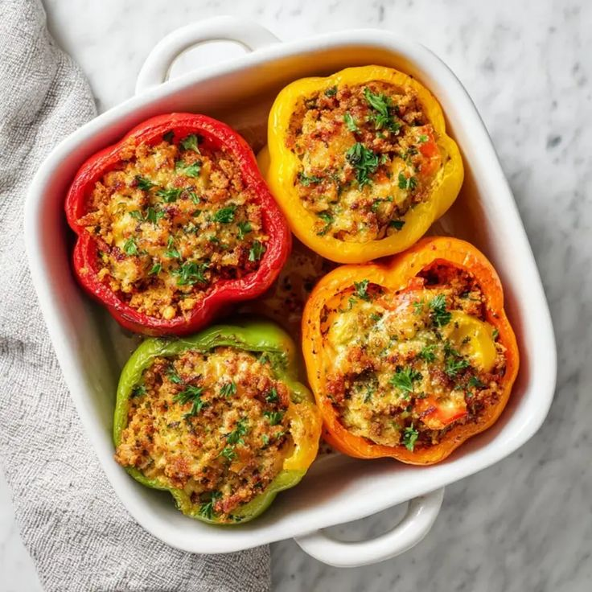

← Back to Menu
Stuffed Bell Peppers
Colorful peppers filled with cheesy rice goodness.

Ingredients
- 4 bell peppers
- 1 cup cooked rice
- ½ cup grated cheese
- Salt & pepper to taste
- Optional herbs
Instructions
- Preheat oven to 180°C (350°F).
- Cut tops off bell peppers and remove seeds.
- Mix rice with cheese, herbs, salt & pepper.
- Stuff mixture into peppers and place in baking dish.
- Bake 25–30 minutes until peppers are tender.